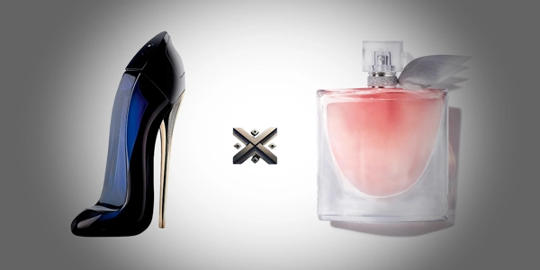

Escolher um perfume pode ser uma tarefa mais complexa do que parece. Afinal, trata-se de uma extensão da nossa personalidade, um toque final no visual e um marcador de presença. Quando o assunto é fragrâncias femininas de prestígio, dois nomes sempre estão entre os favoritos: Good Girl e La Vie Est Belle.
Neste artigo, faremos uma análise completa dessas duas fragrâncias, explorando elementos essenciais como composição aromática, duração na pele, intensidade da projeção, custo-benefício e o estilo de mulher que melhor se identifica com cada perfume.

Lançado em 2016 pela renomada estilista Carolina Herrera, Good Girl rapidamente conquistou o público e se transformou em um verdadeiro sucesso de vendas. Ele é famoso por seu frasco em formato de salto alto – um verdadeiro ícone de sofisticação e ousadia. Mas seu sucesso vai além da embalagem. Good Girl é uma fragrância que traduz a dualidade da mulher moderna: poderosa e delicada, sensual e doce, misteriosa e transparente.
Sua composição mistura notas intensas com toques suaves, representando bem o conceito da campanha "It’s so good to be bad" (É tão bom ser má). É um perfume pensado para mulheres confiantes, que não têm medo de se destacar.
La Vie Est Belle, de Lancôme, foi lançado em 2012 e é descrito como um manifesto de liberdade e alegria. Seu nome significa “A vida é bela”, e essa mensagem está presente tanto na sua fragrância quanto na proposta de marca. Com Julia Roberts como embaixadora da campanha, o perfume remete à leveza, bem-estar e à valorização dos pequenos prazeres da vida.
Ao contrário de Good Girl, La Vie Est Belle aposta em uma combinação mais delicada, com um doce envolvente e um toque elegante. É um perfume que agrada pela suavidade e pela sensação de acolhimento que transmite.
Good Girl é classificado como oriental floral. Suas principais notas incluem:
Essa composição cria um perfume marcante, doce com toque amargo, ideal para noites frias ou eventos sociais em que se deseja causar impacto.
La Vie Est Belle, se destaca como uma fragrância floral gourmand, unindo delicadeza e doçura em sua essência.
O resultado é uma fragrância doce e envolvente, suavemente equilibrada para conquistar logo nas primeiras notas. É perfeita para o dia a dia, encontros românticos ou momentos de autocuidado.
Em termos de fixação, ambas as fragrâncias apresentam desempenho acima da média, especialmente por serem eau de parfum – categoria com maior concentração de óleos essenciais.
Quando falamos em valor, ambos os perfumes estão na categoria de fragrâncias premium. Isso significa que não são exatamente baratos, mas entregam qualidade proporcional ao preço.
Good Girl tende a ser mais alto, reflexo do seu frasco luxuoso e de design impressionante. Já La Vie Est Belle geralmente oferece um melhor custo-benefício, por sua versatilidade e aceitação mais ampla.
Os preços variam conforme o volume e o local de compra, sendo os frascos de 30 ml mais acessíveis e os de 100 ml com melhor rendimento. Se você está em dúvida sobre qual volume escolher, vale considerar o ml de cada perfume e quanto pretende usar no dia a dia. Para quem busca uma fragrância assinatura, frascos maiores são mais vantajosos no longo prazo.
Atualmente, os preços médios no Brasil são:
Ambas as fragrâncias podem ser adquiridas em:
É essencial verificar selos de originalidade, notas fiscais e evitar produtos falsificados, que comprometem a qualidade e segurança.
Good Girl recebe elogios por ser intenso e misterioso. Mulheres que gostam de se destacar relatam sentir mais confiança ao usá-lo. Algumas pessoas consideram sua fragrância intensa demais para o uso durante o dia.
La Vie Est Belle é apreciado pela doçura equilibrada e por ser confortável. Muitas o consideram "cheiro de mulher elegante e feliz", e ele frequentemente rende elogios espontâneos.
A escolha entre Good Girl e La Vie Est Belle depende principalmente do seu estilo pessoal, ocasião de uso e preferência por fragrâncias mais intensas ou mais suaves.
Ambas as fragrâncias são apostas seguras em termos de qualidade, aceitação e longevidade. Seja qual for sua escolha, você estará adquirindo um produto de alto padrão, com excelente performance e apelo emocional.
A comparação entre Good Girl e La Vie Est Belle não gira em torno de superioridade, mas sim de identificação com o seu estilo. Ambas as fragrâncias são amadas mundialmente por razões diferentes, e cada uma tem seu lugar especial na rotina de quem ama perfumes.
Seja para presentear ou se presentear, a decisão deve levar em conta o que cada fragrância representa para você: poder ou leveza? Intensidade ou delicadeza? Ousadia ou romantismo?
Seja qual for sua escolha, uma coisa é certa: com qualquer um desses perfumes, você vai deixar sua marca por onde passar.